melodyne
melodyne主页面分为四个部分:
- 音轨/音符细节
- 多音轨
- 单音轨编辑
- 均衡器(用的较少)
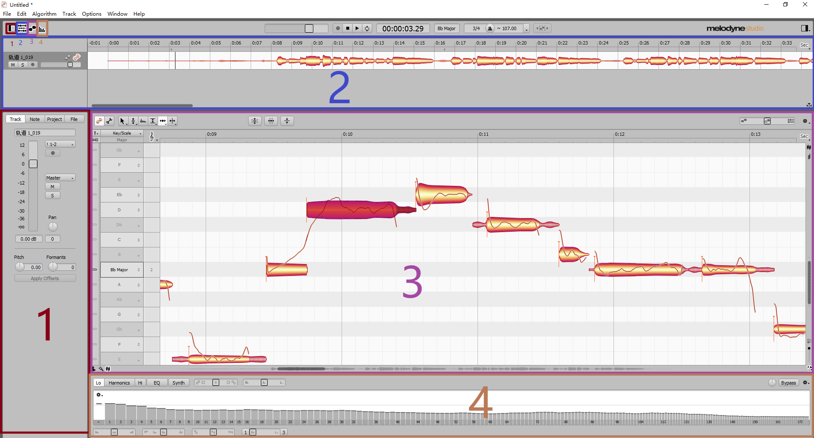
音符属性
在音符细节中, 可以看到音符的各个属性, 并且可以直接输入或鼠标上下拖动调节
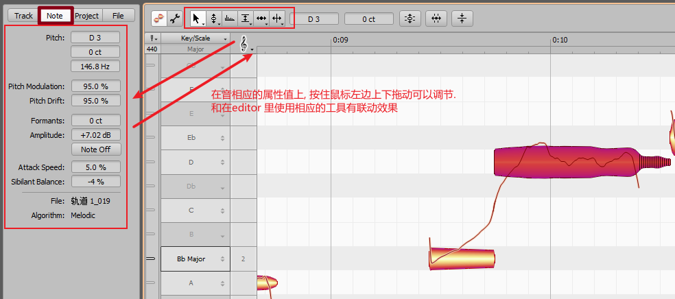
调性与和弦
在单音轨编辑左下角, 可以调出音级和调性的显示
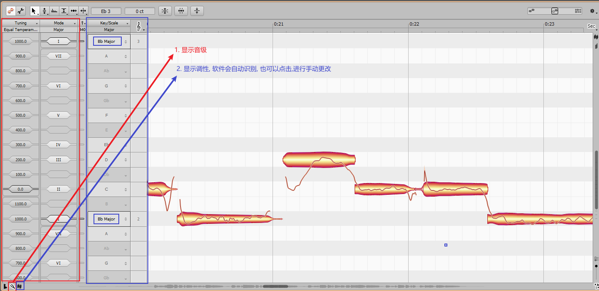
在单音轨编辑右上角, 可以调出时间线上对应的调性和和弦. 可以自己手动输入
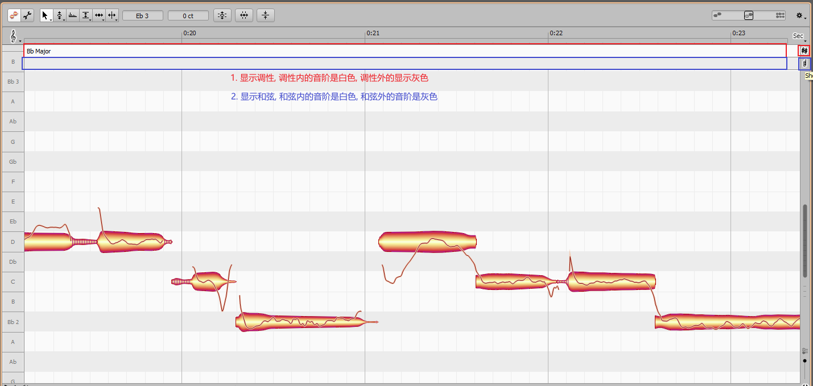
也可以让软件根据人声,自动识别
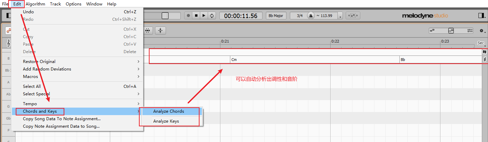
工具栏
拖拽和移动
工具栏第一个: 拖拽和移动:
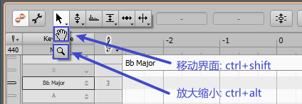
音高调节
工具栏第二个: 音高调节
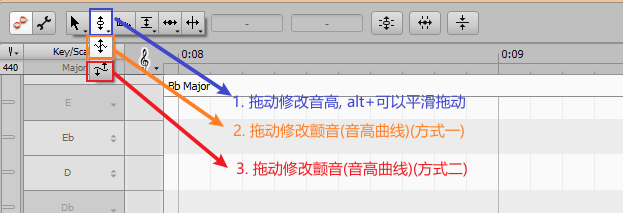
另外, 还可以自动调节
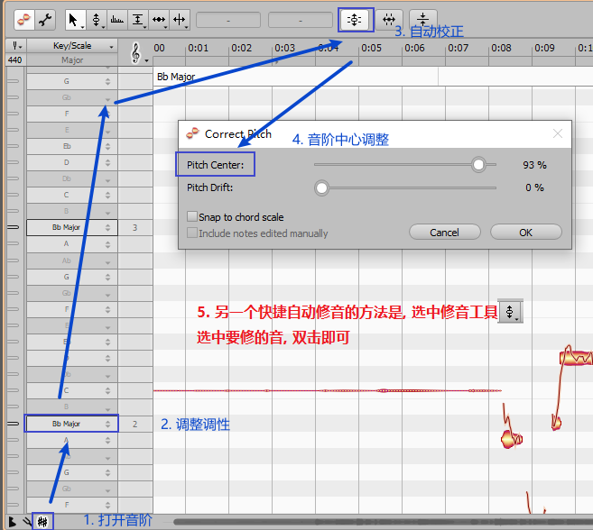
标准化调节
工具栏第三个: 标准化调节(整体相对调节)
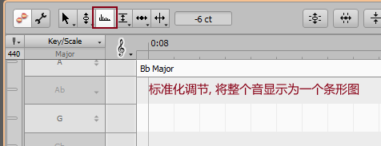
音量调节
工具栏第四个: 音量调节
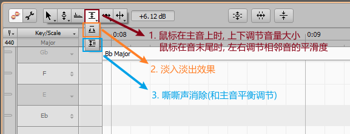
另外还可以进行自动的音量调节:
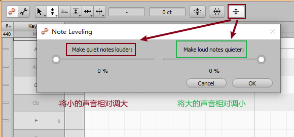
时值调节
工具栏第五个: 时值调节:
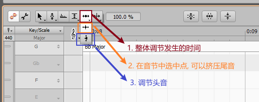
另外还可以自动调节
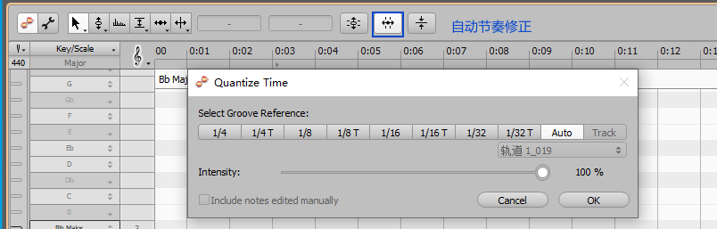
撤销与还原
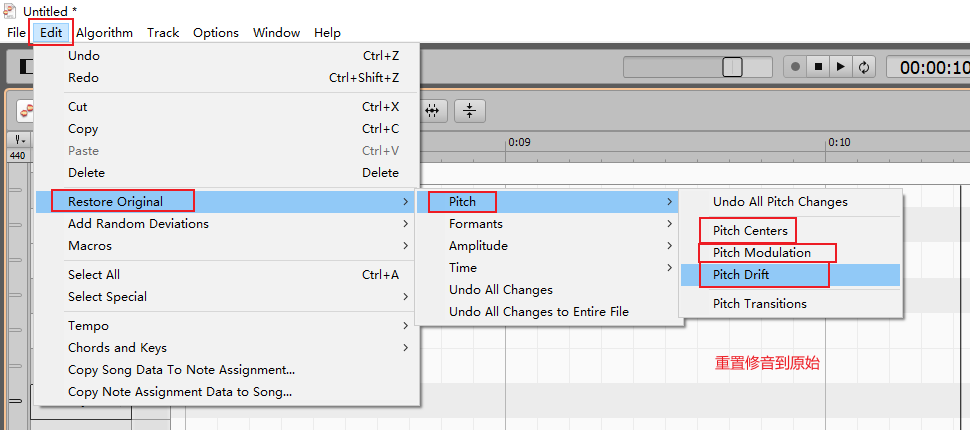
与auditon协同
-
在audition多轨中, 录制声音
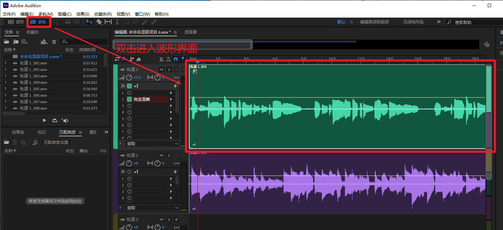
-
在文件夹中获得源文件, 并载入到melodyne中
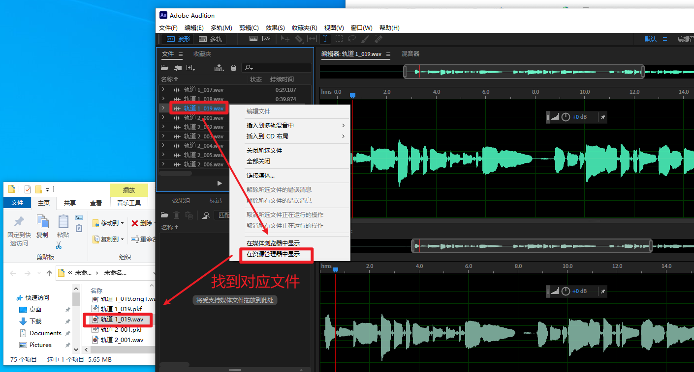
-
在 melodyne中编辑并替换
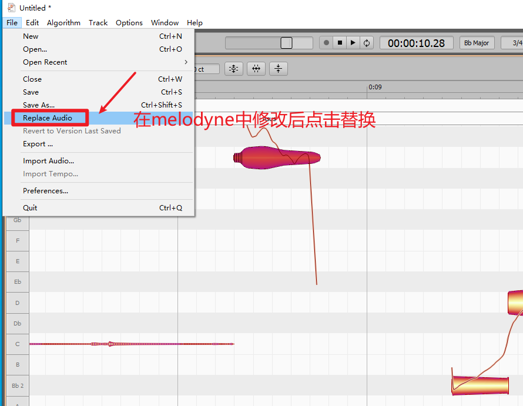